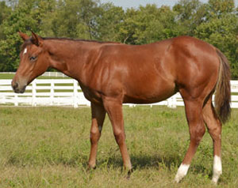
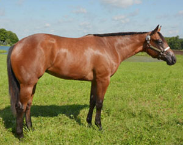

Sold Horses
2013 Horses | 2012 Horses | 2011 Horses | 2010 Horses
2009 Horses | Broodmares | Sold

SOLD Congratulations to Kevin & Amy Smith
ONLY INVITD AT NIGHT ~ 2011 FILLY
SIRE: Invitation Only DAM: RL Night Thing by Continental Hobo
Dam is the producer of a bronze trophy winner


SOLD Congratulations to Kevin & Amy Smith
PLEASED TO BE INVITD ~ 2011 FILLY
SIRE: Invitation Only DAM: Vested Peaches by Vested Pine
Out of a Superior Western pleasure earner and full sister to Britney Pine World Champion, Two Time Reserve World Champion and Congress Champion.


SOLD Congratulations to Jim & Lisa Ferrel
LOPIN FOR THE DOUGH ~ 2011 COLT
SIRE: Lazy Loper DAM: Zippity Good Bar by Zippos Mr Good Bar
Half brother to Only Because Im Good NSBA Reserve World Champion, Congress Top Ten and Reichert Celebration Top Ten; Innovations Good Bar Regional Experience Champion and multiple ROMs.

SOLD Congratulations to Jim Dines
LOPIN AND A HOPE EN ~ 2012 Colt
SIRE: Lazy Loper DAM: Only Roses Will Do (Invitation Only)
This is her first foal.
SOLD Congratulations to Karen Evans Mundy
WILLY GOT POTENTIAL ~ 2012 COLT
SIRE: Winnies Willy DAM: Potential Ami (Potential Investment)
Potential Ami is out of the great mare, Ami Walker, multiple Superior Producer and Reserve Congress Champion Producer.
SOLD
OMG HES LAZY ~ 2011 COLT
SIRE: Lazy Loper DAM: Almost Good by Zippos Mr Good Bar
Dam is out of Ms RD Booty, AQHA Reserve World Champion and earner of 388 points.

SOLD Congrats to Gail Torsell
ARENT YOU INVITED ~ 2011 FILLY
SIRE: Invitation Only DAM: Flowers Ms Ivy by Sir Bar Flower
Dam is a Reichert Celebration Champion, Open and Amateur Superior Western Pleasure earner with 220 points.

SOLD Congratulations to Julie & David Ehler
DOWNRIGHT LAZY ~ 2011 COLT
SIRE: Lazy Loper DAM: Investment A Ward by Zippo A Ward
Full brother to Bein A Little Lazy NSBA Breeders Championship Futurity 2 YO Non Pro Int & Ltd Western Pleasure Champion. Dam is a Futurity Champion, AQHA point earner and NSBA money earner.
SOLD
INVITD FOR ROMANCE ~ 2011 FILLY
SIRE: Invitation Only DAM: A Bit of Romance by Coosa Lad
Dam is daughter of Majestic Romance, earner of Open and Amateur Superiors and over 300 points.

SOLD CONGRATULATIONS TO BETTY ANNE VIVIAN
ONLY ROGER ~ 2011 COLT
SIRE: Invitation Only DAM: Deducted (tb)

SOLD Congratulations to Birgit Bayer-Sassenhausen, Willich, Germany
YOUR LUCKY IM LAZY ~ 2011 COLT
SIRE: Lazy Loper DAM: KT Lucky Breeze (APHA)
SOLD
GEST INVITE ME ~ 2010 GELDING
SIRE: Invitation Only DAM: Romantic Gesture by Son Of A Roman
Half brother to Congress Top Tens, Performance ROMs, earners of over 270 points and out of a Congress Top Ten placer and AQHA High Point Top Five.

SOLD
ILL MAKE YA HOT ~ 2010 FILLY
SIRE: These Irons Are Hot DAM: Rivita by Encoriva
Out of a World Show Qualifier and Performance ROM earner.
SOLD Congratulations to Birgit Bayer-Sassenhausen, Willich, Germany
LAZY SOMEBODY ~ 2010 FILLY
SIRE: Lazy Loper DAM: Good Special Miss by Zippos Mr Good Bar
Half sister to PERSONAL INVITE AQHA High Point Champion, Congress Top Five and Superior Western Pleasure; half sister to PRINCIPELY GOOD BARS APHA Reserve World Champion, multiple Superiors and over 511 points.
SOLD
LOPE DA UTTER WAY ~ 2010 GELDING
SIRE: Lazy Loper DAM: Naturally Crimson by Natural Iron
Out of a Futurity Top Ten placer, AQHA point earner and full sister to AQHA point earners.

SOLD
LOPERS GET GOOD CHEX ~ 2010 FILLY
SIRE: Lazy Loper DAM: Chex Are Good by Zippo Pine Chex
Dam is out of a full sister to So Good Im Shameless Reserve Congress Champion and NSBA High Point Champion.
SOLD
THESE LEGS ARE LONG ~ 2010 COLT
SIRE: These Irons Are Hot DAM: Hazen Blaze (tb)
Half brother to AQHA point earners.
SOLD
IM ESPECIALLY LAZY ~ 2010 FILLY
SIRE: Lazy Loper DAM: Good Special Miss by Zippos Mr Good Bar
Half sister to PERSONAL INVITE AQHA High Point Champion, Congress Top Five and Superior Western Pleasure; half sister to PRINCIPELY GOOD BARS APHA Reserve World Champion, multiple Superiors and over 511 points.

SOLD
IF YOUD ONLY ASKED ~ 2010 FILLY
SIRE: Invitation Only DAM: DJ Ebony by Impressive
Full sister to both INVITATION IN BLACK Reserve Congress Champion Masters Western Pleasure and A WILL OF HER OWN Congress Top Five and AQHA World Show Top Ten
SOLD
GEST LOPIN ALONG ~ 2010 COLT
SIRE: Lazy Loper DAM: Romantic Gesture by Son Of a Roman (tb)
Dam is AQHA High Point Top Five and Congress Top Five placer and a proven producer of multiple Congress Top Tens, multiple Performance ROMs and earners of over 290 points.
SOLD
SLOW LOW AND LAZY ~ 2010 FILLY
SIRE: Lazy Loper DAM: Investment A Ward by Zippo Award
Half sister to Circuit Champion and out of a Futurity Champion, AQHA point earner and NSBA money earner.
SOLD
WHAT ABOUT INVITIN ME ~ 2010 COLT
SIRE: Invitation Only DAM: Goodbars Glamourgirl by Zippos Mr Good Bar
Half brother to COOL ASSETS World Champion, Reserve World Champion, 9 Time Congress Champion, 3 Time AQHA High Point Champion, over 900 points and $53,000 in earnings.
SOLD
SO DANG LAZY ~ 2010 COLT
SIRE: Lazy Loper DAM: Good Special Miss by Zippos Mr Good Bar
Half brother to PERSONAL INVITE AQHA High Point Champion, Congress Top Five and Superior Western Pleasure; half brother to PRINCIPELY GOOD BARS APHA Reserve World Champion, multiple Superiors and over 511 points.

SOLD
ARENT YOU INVIOUS ~ 2010 FILLY
SIRE: Invitation Only DAM: Flowers Ms Ivy by Sir Bar Flower
Dam is a Reichert Celebration Champion, Open and Amateur Superior Western Pleasure earner with 220 points.
SOLD
JAMAICAN ME LAZY ~ 2010 FILLY
SIRE: Lazy Loper DAM: Blazing Hot Star by Blazing Hot
Half brother to Open & Amateur Performance ROM earner and full brother to Reichert Celebration Top Ten placer.
SOLD
TALK ABOUT LAZY ~ 2010 FILLY
SIRE: Lazy Loper DAM: Ima Foxy Chex by Zippo Pine Chex
Out of a Congress Top Five, AQHA World Show Top Ten, Open and Amateur Superior Western Pleasure earner with over 200 points.
SOLD
LAZY LIKE YO MAMA ~ 2010 GELDING
SIRE: Lazy Loper DAM: Impulsive Debutante by Hot Impulse
Dam is half sister to Reserve Futurity Champion, Performance ROM earners and out of a Superior Western Pleasure mare that is full sister to multiple Reserve World Champions.
SOLD
ONLY DID THAT ONCE ~ 2010 COLT
SIRE: Invitation Only DAM: Investment A Ward by Zippo Award
Half brother to Bein A Little Lazy 2011 NSBA Breeders Championship Futurity 2 YO Non Pro Int & Ltd Western Pleasure Champion and out of a Futurity Champion, AQHA point earner and NSBA money earner.
SOLD
DONT I LOOK GOOD ~ 2010 COLT
SIRE: Zippos Mr Good Bar DAM: Investment A Ward by Zippo Award
Half brother to Circuit Champion and out of a Futurity Champion, AQHA point earner and NSBA money earner.
SOLD
INVITE THE SHY GUY ~ 2010 GELDING
SIRE: Invitation Only DAM: Shy By Nature by Zippos Old Gold
Half brother to NATURE INVESTMENT AQHA World Champion, Superior earner and AQHA High Point Top Ten out of a full sister to Congress Champion Texas T Bone.
SOLD
WILLYA BE LAZY ~ 2010 COLT
SIRE: Lazy Loper DAM: Was A Mouse Invited by Willy Be Invited
His dam is out of a full sister to a Congress Top Ten placer, Performance ROM earners and a Superior earner.